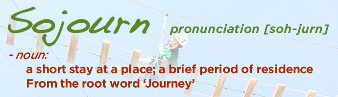

Feedback
Feedback
 Prepare for Your Adventure
Prepare for Your Adventure
 About Sojourn
About Sojourn

Our lives take us on many journeys; with our careers, families, sports teams, schools, etc... At Sojourn, our desire is to provide a safe and fun environment to Sojourn from these life journeys for a brief period of time in order to reflect, gain new insight, and enter back into our journeys with new perspective.

Location
Most Sojourn programming takes place on the property of Perimeter church in John's Creek, GA. The property is located at the corner of Old Alabama Rd. and Hwy 141/Medlock Bridge Rd. If location is a challenge, ask us about off-site adventures and portable programs.
ACCT Membership
The Association for Challenge Course Technology is recognized as the leading professional resource for those who create safe and effective challenge course programs that facilitate learning and positive change in individuals, groups, and communities. We are an organizational member of ACCT and our products and services are independent crom those offered by ACCT. We are not an agent of ACCT nor does the ACCT warrant, endorse, or approve any product or service offered by us. Sojourn operates under the standards set by ACCT. All of our staff members are training according to ACCT standards and our key staff members have advanced ACCT certification.Pricing
Pricing varies depending on the length of your adventure, size of your group, and the activities necessary to attain certain group goals and objectives. For full pricing and further details about booking a course, please contact the Sojourn office.Note: Sojourn currently focuses exclusively on team building with pre-existing groups and therefore does not allow individual sign-ups for zip lining, birthday parties, or similar outings.